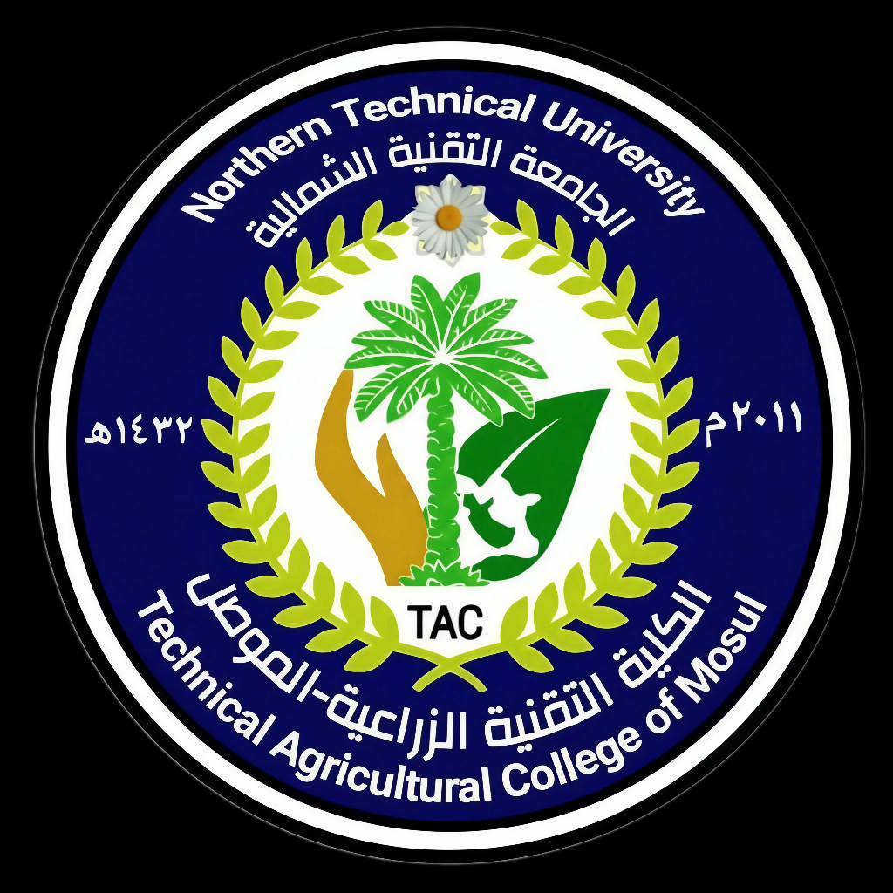

الجامعة التقنية الشمالية - الكلية التقنية الزراعية / الموصل

تحت رعاية
رئيسة الجامعة التقنية الشمالية
زراعة حديثة مدعومة بالذكاء الاصطناعي وتقنيات انترنت الاشياء
إيكو كونترول هو نظام متطور لإدارة الدفيئات مبني على متحكمات ESP32 وتقنيات الويب الحديثة. يوفر النظام مراقبة فورية وأتمتة ذكية للبيئات الزراعية، مما يساعد المزارعين والهواة على تحقيق أفضل ظروف النمو مع تقليل هدر الموارد.
إمكانيات قوية مصممة للزراعة الحديثة
حدد درجة الحرارة والرطوبة المستهدفة ودع النظام يتحكم تلقائياً بالمروحة والسخان والباب للوصول للقيم المطلوبة.
أوضاع ري متعددة: كمي (باللتر)، وقتي (بالدقائق)، وذكي (بناءً على رطوبة التربة) مع جدولة متقدمة.
مساعد ذكي يقدم توصيات زراعية، تشخيص أمراض النباتات، ونصائح لتحسين الإنتاج.
تتبع النباتات والأسمدة والمستلزمات الزراعية مع خريطة تفاعلية للأحواض داخل الدفيئة.
قراءات حية للحساسات ومراقبة تدفق المياه واستهلاكها الكلي مع تحديث تلقائي للبيانات.
واجهة عصرية وجميلة تعمل بسلاسة على جميع الأجهزة: الحاسوب، التابلت، والجوال.
ادخل إلى لوحة التحكم وابدأ في تحسين بيئة الزراعة الخاصة بك اليوم.